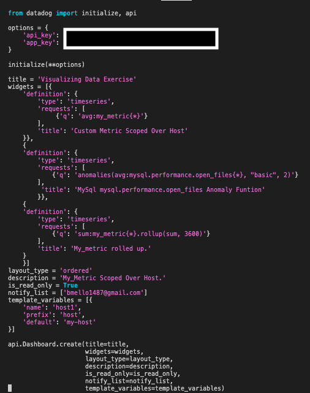
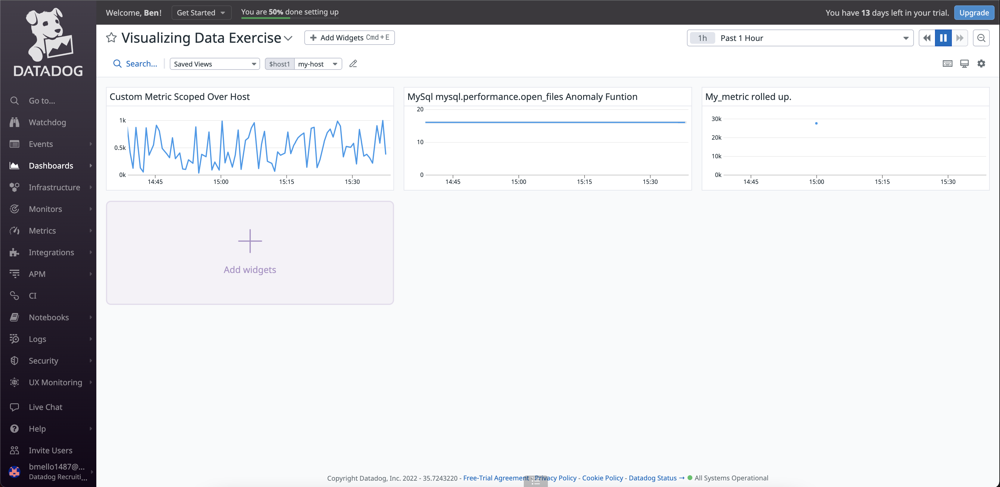

Visualizing Data¶
I tried using the Postman API with JSON but ran into issues as I have never used this before. I decided to configure the API with Python as I am more comfortable with this language.
Initialize Python API for Datadog¶
Install the Python Datadog package
pip install datadog
Install the Datadog API client
pip3 install datadog-api-client
Note
You must have pip3 installed to download the Datagdog Library to the VM
Create Python Script to Display Timeboards in Datadog UI¶
Create a new Python file within
/etc/python
vagrant@vagrant:~$ sudo vim /etc/python/timeboard_data_exercise.py
Add the following code to that file

I Initiated these two commands for the python script to run and populate data in the Datadog UI
vagrant@vagrant:~$ export DD_SITE=" " DD_API_KEY="<Your_DD_API_Key>" DD_APP_KEY="<Your_DD_APP_Key>"
vagrant@vagrant:~$ python /etc/python/timeboard_data_exercise.py
I Checked the Datadog UI Dashboard List and saw my “Visualizing Data Exercise” Timeboards were created and populated.
Three timeboards were created to show my_metric scoped over the host, any anomalies within the mysql.performance.open_files metric outside of two stand deviations, and my_metric rolled up to sum all the points for the past hour into one bucket.

Set the Timeboard’s timeframe to 5 minutes and take a snapshot of this timeboard graph - use the @ notation to send it to yourself

Bonus: The Anomlay graph is displaying on any value outside of the 2 standard deviations.